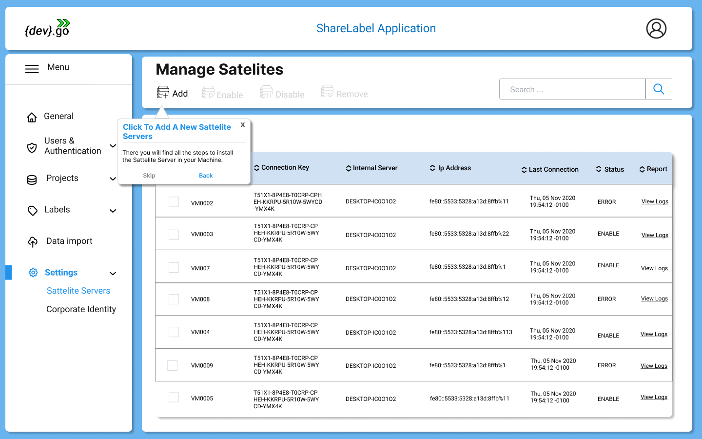
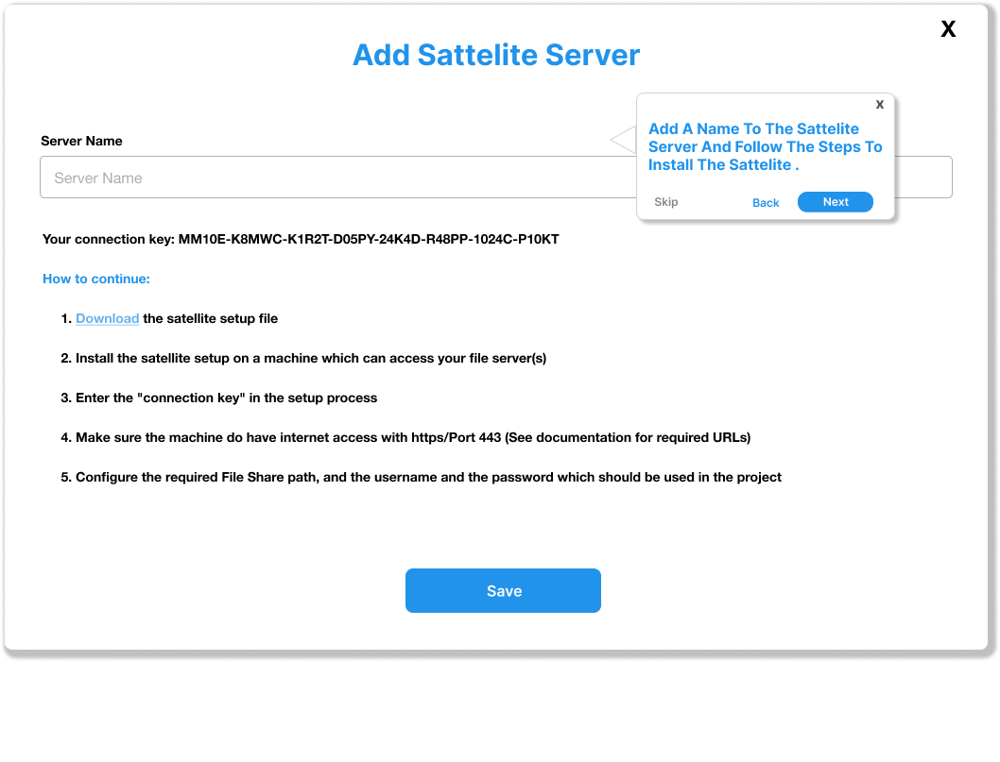

How to Install The Satellite Server
The Installation of the Satellite server is straight forword.
- Under settings, go to sattelite servers and there you can click on add as shown below:

- After that just follow the instructions as shown in the figure bellow:

And thats it! After that you have to wait at least one hour in order to finish the process.